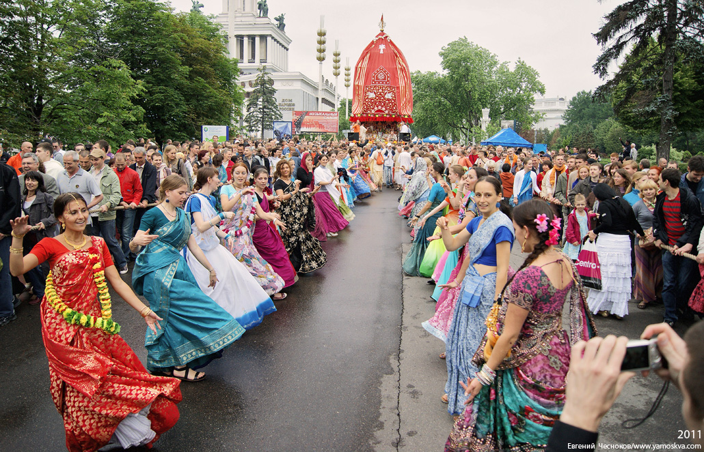
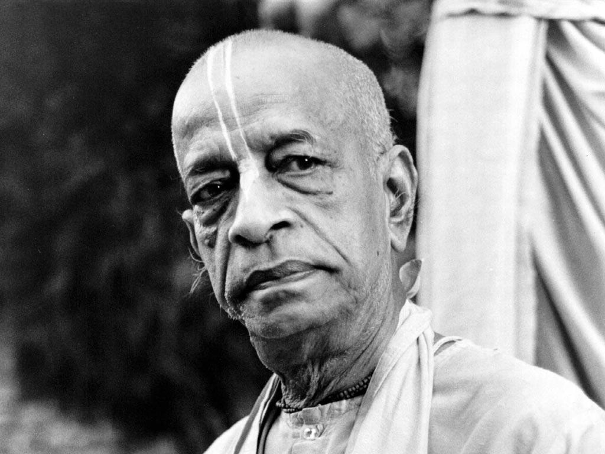

О Харинаме
Вы идете по улице и вдруг видите перед собой необычно разодетых молодых людей, танцующих и поющих «Харе Кришна!» Что это такое? Как это понимать? Что за слова они поют? Какой смысл в таком действии? Какая польза окружающим? Нужно ли Вам это? - Такие вопросы естественным образом возникают у любопытных прохожих. Это незамысловатое и даже немного чудаковатое действие, однако, основывается на научных принципах. Они описываются в ведической литературе: «Бхагавад-гите как она есть», «Шримад-Бхагаватам», «Шри Чайтанья-Чаритамрите» и других. Мы очень коротко раскроем главные из этих принципов:
- Изначально существует два мира: духовный и материальный.
- Оба они находятся во власти Бога и принадлежат Ему.
- Разнообразные живые существа, обитающие в этих двух мирах, бессмертны так же, как и Бог, потому что являются Его неотъемлемыми, но отделенными частичками.
- Духовный мир населен любящими Бога [Кришну] живыми существами, которые испытывают безграничное
счастье от своих взаимоотношений с Ним. Пять основных видов этих взаимоотношений:
- нейтральные;
- отношения слуги и господина;
- дружеские или братские;
- родительские;
- и наконец, супружеские.
- Мир, в котором мы сейчас находимся, предназначен для исправления тех, кто проявляет бунтарский дух, завидует Богу и пытается занять Его положение, думая о себе как о верховном повелителе. Это невозможно, а желают этого практически все (за исключением истинно верующих людей разных конфессий). Подобные устремления ведут к разочарованию, и в материальном мире всех как наказание преследует страх старости, болезней и смерти.
- Имена Бога: Харе (энергия наслаждения Господа), Кришна (Всепривлекающий), Рама (Всерадующий) - проявление безграничной милости любящего нас Бога. Святые имена нисходят к нам из духовного мира и помогают искренним людям понять Бога и любить Его. Они подобны канату, брошенному утопающему в океане, наполненном кровожадными акулами лжи и невежества.
- Кришна никогда не принуждает живые существа любить Его, но и не скрывает этого желания. Кали-юге юга-дхарма намера прачара - говорит Господь Чайтанья (золотая аватара нашего века) в "Чайтанья-чаритамрите". Если кто-то в этот век порока и лжи пожелает проявить свою любовь к Богу, то ему следует воспевать святые имена: Харе Кришна Харе Кришна Кришна Кришна Харе Харе, Харе Рама Харе Рама Рама Рама Харе Харе. И Он на собственном примере показал, как это надо делать.
Харинама может проявляться по-разному: крупномасштабное театрализованное действие, фестиваль, выступление небольшой группы людей, поющих на улицах города или в парках. Они раздают угощения, распространяют книги, буклеты, аудио- и видеопродукцию. В любом виде харинама неизменно благотворна для всех, даже для неверующих и равнодушных к Богу людей. А духи и приведения покидают то место, где она проходит. Более подробно эта наука о любви к Богу - бхакти-йога - описана в книгах Его Божественной Милости А.Ч. Бхактиведанты Свами Прабхупады.
